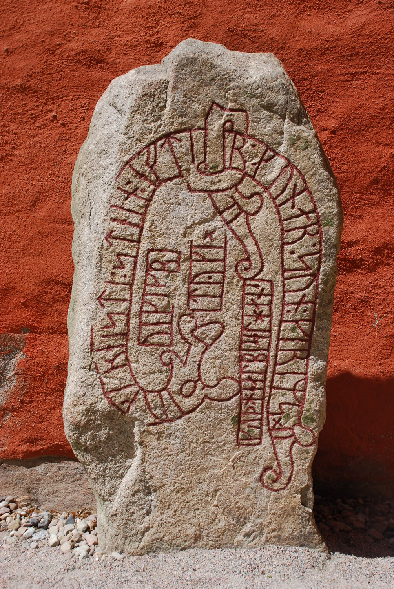
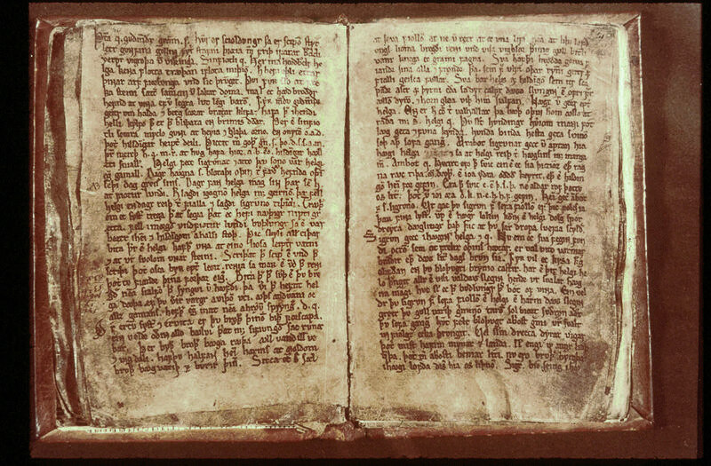

História das religiões · Arqueologia · Filologia · Literatura medieval
Paganismo Germânico
Tradições, deuses e práticas religiosas dos povos germânicos pré-cristãos
Um termo moderno para religiões diversas da Europa germânica. Não houve igreja única, credo universal nem “Bíblia viking”: o quadro histórico precisa ser reconstruído a partir de materiais de épocas, regiões e autores diferentes.
Começar pelas evidênciasPaganismo Germânico não é sinônimo de “religião viking”
O termo reúne, para fins de estudo, tradições continentais, anglo-saxônicas e nórdicas. Elas possuem relações históricas e linguísticas, mas não formavam uma instituição religiosa centralizada ou perfeitamente uniforme. [1]
Nesta página
Primeiro: o que estamos estudando?
O que era?
Diferentes comunidades germânicas possuíam tradições religiosas relacionadas, mas não necessariamente idênticas. [1]
Como funcionava?
Ritos, oferendas, banquetes, funerais, relações com divindades e outros seres e práticas comunitárias eram mais importantes para reconstruir a religião vivida do que uma lista moderna de “crenças oficiais”.
Como sabemos?
Arqueologia, inscrições rúnicas, textos romanos, poesia escáldica, Eddas e sagas preservam tipos diferentes de evidência. [2]
Existe hoje?
Heathenry e Ásatrú são movimentos religiosos modernos inspirados em fontes antigas e medievais; não equivalem a uma transmissão intacta desde a Era Viking. [14]
Uma categoria ampla
“Nórdico” é uma parte do quadro germânico, não o todo.
Religiões mudam junto com sociedades
As datas abaixo organizam transformações amplas. Regiões diferentes não mudaram simultaneamente.
Fontes externas e tradições regionais
Autores romanos como Tácito descrevem práticas de povos germânicos, mas escrevem como observadores externos e com objetivos literários próprios. [3]
Materialidade religiosa
Depósitos, sepultamentos, amuletos, edifícios e inscrições permitem investigar ritos sem depender apenas da literatura posterior.
Era Viking
A expansão e mobilidade escandinavas intensificam encontros entre religiões e culturas. “Viking”, porém, descreve um contexto histórico específico, não todos os germânicos.
Cristianizações
Conversões, alianças políticas, comércio, missões, coexistência e coerção aparecem em combinações diferentes. [10]
Literatura medieval
Boa parte da mitologia nórdica que lemos hoje é registrada por escrito em sociedades já cristãs. [12]
Reconstruções modernas
Estudos filológicos, nacionalismos, romantismos e posteriormente novos movimentos religiosos produzem novas formas de interpretar o passado germânico.
Deuses são parte da história — não a história inteira
Odin
Conhecimento, poesia, poder, guerra e morte aparecem entre associações documentadas em fontes nórdicas.
Thor
Trovão e proteção são associações importantes; amuletos em forma de martelo constituem evidência material relevante. [5]
Freyja
Textos medievais relacionam a personagem a desejo, fertilidade, magia e morte — categorias que se sobrepõem.
Freyr
Prosperidade, fertilidade e relações de poder aparecem em diferentes fontes nórdicas.
Týr
Fontes literárias associam-no a conflito e compromisso; seu nome também se relaciona historicamente à runa t.
Limite: resumir cada divindade a uma “função” é uma conveniência didática moderna. Atributos variam por fonte, período e região.
Não eram apenas deuses
A fronteira moderna entre “divindade”, “espírito”, “ancestral” e “ser mitológico” nem sempre descreve bem categorias religiosas antigas.
Como se praticava?
Blót
Termo nórdico associado a sacrifício/oferenda. Fontes textuais e arqueologia apontam para práticas rituais, mas detalhes não eram idênticos em todos os lugares. [6]
Banquetes e festividades
Comida, bebida, hospitalidade, autoridade e ritual podiam coexistir em encontros coletivos.
Oferendas
Objetos, animais e outros materiais foram depositados ritualmente em determinados locais e contextos.
Funerais
Cremação, inumação, barcos, montes e bens funerários variaram muito; Sutton Hoo é um exemplo anglo-saxão de alta complexidade material. [4]
Seiðr
Fontes medievais descrevem práticas associadas a magia, conhecimento e adivinhação. Como são fontes tardias, reconstruções exigem cautela.
Völva
A figura profética feminina aparece em textos nórdicos e é discutida em relação a material arqueológico, sem permitir um “manual” uniforme de práticas. [8]
Religião, paisagem e sociedade
Natureza
Bosques, árvores, águas e outros lugares aparecem em fontes e contextos ritualizados; não é seguro convertê-los em uma doutrina ecológica moderna. [3]
Comunidade
Ritual, festa, hospitalidade e poder podiam reforçar vínculos coletivos.
Família
Parentesco, memória e ancestrais aparecem de maneiras diversas na vida social e funerária.
Destino
Poemas medievais exploram destino, conhecimento e limitação humana, mas não constituem credo universal.
Poder
Chefias, realeza e religião frequentemente se entrelaçavam; a relação variava historicamente.
Morte
Sepultamentos e narrativas sobre o além revelam pluralidade, não uma geografia pós-morte única e padronizada.
Nem romantização, nem sensacionalismo
Sacrifício animal
Evidência: forte em contextos específicos. Em Hofstaðir, na Islândia, estudos arqueológicos interpretam decapitação e exposição de gado como parte de atos sacrificiais sazonais. [7]
Sacrifício humano
Evidência: possível/provável em determinados contextos, extensão incerta. Textos como Ibn Fadlan e Tácito e alguns debates arqueológicos precisam ser avaliados caso a caso. Não há base para declarar prática universal. [9]
Guerra
Elementos guerreiros são muito visíveis em parte da literatura e da cultura material, mas religião não explica sozinha expansão, comércio, conflito ou violência viking.
O que aconteceu com as religiões germânicas?
A cristianização não seguiu uma única rota. A pesquisa contemporânea descreve encontros em diásporas, decisões de elites, redes missionárias, intercâmbios e pressões variadas; grande parte das fontes narrativas foi escrita por cristãos, o que exige crítica de fonte. [10]

Reconstruir uma religião com fontes incompletas
Arqueologia
Sepultamentos, edifícios, depósitos, amuletos e objetos oferecem evidência material direta.
Limite: objetos não explicam sozinhos significado e intenção.Inscrições
Runas registram nomes, memória, linguagem e, em certos casos, fórmulas com possíveis dimensões religiosas.
Limite: runas são antes de tudo sistemas de escrita; uso mágico é apenas uma parte de seu histórico. [11]Literatura medieval
Edda Poética, Edda em Prosa, sagas e poesia escáldica preservam enorme quantidade de material.
Limite: manuscritos e autores pertencem a contextos medievais cristianizados. [12]Autores externos
Romanos e cristãos descrevem povos e práticas que muitas vezes não falam diretamente por si mesmos.
Limite: gênero literário, política e polêmica religiosa podem distorcer descrições. [3]Nível de evidência
- ●●●● Forte
- Múltiplas evidências convergentes e contexto relativamente claro.
- ●●●○ Moderada
- Base relevante, mas com lacunas ou problemas de interpretação.
- ●●○○ Limitada
- Fonte tardia, isolada ou contexto insuficiente.
- ●○○○ Especulativa
- Hipótese sem base suficiente para ser apresentada como consenso.
Afirmações populares colocadas à prova
| Afirmação | Avaliação | Contexto |
|---|---|---|
| Todos os germânicos tinham a mesma religião. | Incorreto | O termo agrega tradições diversas e descentralizadas. |
| Todos acreditavam nos mesmos deuses da mesma forma. | Não demonstrado | Nomes relacionados e temas comuns não eliminam diferenças regionais. |
| A Edda era a “Bíblia dos vikings”. | Falso | É literatura medieval preservada por manuscritos posteriores à cristianização. |
| Runas eram usadas apenas para magia. | Falso | São sistemas de escrita empregados em contextos muito variados. |
| Sacrifícios animais ocorreram. | Bem documentado | Há evidência arqueológica em sítios específicos. |
| Sacrifício humano nunca ocorreu. | Provavelmente falso | Há fontes textuais e casos debatidos, mas extensão e frequência são incertas. |
| Todos foram convertidos à força. | Simplificação | Conversão incluiu múltiplos mecanismos e cronologias. |
| Ásatrú moderno é exatamente a religião viking original. | Falso | É um conjunto de movimentos modernos que reconstrói e reinterpreta fontes históricas. |

Textos fundamentais — e seus limites
Edda Poética
Poemas mitológicos e heroicos preservados principalmente em manuscritos medievais.
Importância: muito altaEdda em Prosa
Associada a Snorri Sturluson; indispensável para poesia e mitologia, mas produto intelectual cristão do século XIII.
Importância: muito altaHávamál
Poema eddico com conselhos, relações sociais, conhecimento e sabedoria.
Não é código moral oficial.Sagas
Literatura medieval que combina memória, tradição, criação narrativa e debates sobre identidade e conversão.
Importância: alta, historicidade variável.Textos medievais podem preservar material mais antigo sem serem janelas transparentes para a Idade do Ferro.
Paganismo Germânico hoje
Heathenry, Ásatrú e denominações relacionadas formam um campo contemporâneo diverso. Fontes modernas documentam práticas atuais — não servem automaticamente como evidência da religião antiga. [14]
Reconstrução
Alguns grupos priorizam filologia, arqueologia e história na construção de práticas contemporâneas.
Politeísmo
Muitos praticantes cultuam deuses nórdicos ou germânicos, mas teologias e interpretações não são uniformes.
Ritual e comunidade
Blóts modernos, encontros, celebrações sazonais e práticas familiares recebem formas novas.
Natureza
Algumas organizações atuais enfatizam respeito à natureza; isso deve ser identificado como valor contemporâneo, não projetado automaticamente sobre a Antiguidade. [15]
Desenvolvimento pessoal: formulação responsável
Praticantes podem buscar contemplação, identidade, disciplina ritual, comunidade ou conexão com paisagens. Essas metas relatadas não demonstram que Heathenry funcione como tratamento médico ou psicológico.
Runas, identidade e apropriação política
Uso histórico
Runas eram caracteres de sistemas de escrita germânicos. Objetos e inscrições possuem contextos arqueológicos próprios.
Apropriação nazista e supremacista
No século XX, o nazismo apropriou runas e outros símbolos para construir uma fantasia racial “ariana”; grupos supremacistas posteriores continuaram alguns desses usos. [16]
Usos não racistas
Os mesmos alfabetos e símbolos também aparecem em pesquisa, patrimônio, cultura popular e comunidades pagãs não racistas. Organizações contemporâneas como The Troth defendem explicitamente Heathenry inclusivo. [17]
O símbolo isolado não basta: contexto, combinação, intenção e comunidade de uso são indispensáveis para interpretação.
Uma escola prática de crítica de fontes
História
Transformação religiosa da Europa e contatos entre sociedades.
Religião
Sistemas descentralizados, ritual, memória e comunidade.
Literatura
Uma tradição medieval de enorme influência cultural posterior.
Arqueologia
Como objetos e sítios podem — e não podem — responder perguntas religiosas.
Linguística
Runas, nomes divinos e evolução das línguas germânicas.
Pensamento crítico
Comparar fontes antigas externas, manuscritos tardios e reconstruções modernas.
Primeiro evidência. Depois interpretação.
O Paganismo Germânico é historicamente mais interessante quando deixamos de procurar uma “religião viking” completa e uniforme. A combinação entre arqueologia, inscrições, literatura medieval e testemunhos externos revela tradições plurais — e também torna visíveis as lacunas. É justamente essa incerteza controlada que permite distinguir passado histórico, literatura e religiões reconstruídas no presente.
Fontes e referências
Verificação técnica e bibliográfica desta página: 12 de agosto de 2026.
[1] Cambridge University Press — Ancient Europe · diversidade e fontes
Capítulo de Hilda Ellis Davidson sobre religiões europeias antigas. Destaca povos germânicos formados por múltiplos grupos, religião não centralizada e importância conjunta de arqueologia e literatura posterior.
Consultar fonte[2] Cambridge — Eddic poetry and the religion of pre-Christian Scandinavia
Discussão metodológica do uso da poesia eddica como fonte para história da religião pré-cristã escandinava.
Consultar fonte[3] Tácito — Germania · testemunho romano
Fonte antiga central, apresentada com advertência do próprio projeto Fordham: Tácito descreve povos germânicos, mas também comenta indiretamente a sociedade romana de sua época.
Consultar fonte[4] British Museum — Sutton Hoo · arqueologia funerária anglo-saxônica
Material institucional sobre o sepultamento naval do início do século VII e sua complexidade material.
Consultar fonte[5] Portable Antiquities Scheme / British Museum — pingente de Mjölnir
Objeto de ouro datado aproximadamente de 850–950, interpretado como amuleto em forma do martelo de Thor.
Consultar ficha e licença[6] Cambridge History of Old Norse-Icelandic Literature — paisagem e cultura material
Discussão sobre locais rituais, edifícios e evidências possíveis de casas associadas a blót na Escandinávia medieval.
Consultar fonte[7] European Journal of Archaeology — Hofstaðir · sacrifício animal
Estudo arqueológico que interpreta decapitação de gado e exposição de cabeças como componente ritual sazonal no assentamento islandês.
Consultar fonte[8] Archaeological Dialogues — völva e limiares funerários
Exemplo de pesquisa que cruza material arqueológico com narrativas medievais envolvendo völur e práticas de conhecimento ritual.
Consultar fonte[9] Cambridge Archaeological Journal — sacrifício humano na Era Viking
Reavaliação crítica do relato de Ibn Fadlan e de como gênero e pressupostos modernos afetam interpretações de sacrifício humano.
Consultar fonte[10] Studies in Church History (2025) — encontros e conversão na diáspora escandinava
Lesley Abrams enfatiza diversidade nos processos de conversão e o fato de que grande parte das fontes foi escrita por autores cristãos.
Consultar fonte[11] Pedra rúnica Sm 10 · runas em contexto cristão
A inscrição termina com pedido para que Deus ajude a alma de Gunnar, mostrando que escrita rúnica não desapareceu automaticamente com a cristianização.
Consultar ficha e licença[12] Cambridge (2025) — natureza medieval e cristã do corpus nórdico preservado
Pesquisa recente recorda que os primeiros textos vernaculares sobreviventes são medievais e produzidos em sociedade cristã, embora demonstrem interesse intenso no passado pré-cristão.
Consultar fonte[13] Árni Magnússon Institute — Codex Regius
O instituto descreve o GKS 2365 4to como o mais antigo e importante conjunto preservado de poemas eddicos, provavelmente escrito por volta de 1270.
Consultar fonte[14] Oxford Reference — Heathenry / Ásatrú
Referência contemporânea para Heathenry/Ásatrú como prática espiritual moderna baseada em mitologias do norte europeu.
Consultar fonte[15] Ásatrúarfélagið — organização religiosa islandesa contemporânea
Fonte produzida por organização atual. Útil para documentar o presente, não para provar práticas antigas.
Consultar fonte[16] ADL — escrita rúnica e apropriação extremista
A ADL distingue o uso histórico e não racista das runas de apropriações nazistas e supremacistas modernas, reforçando a necessidade de interpretar símbolos em contexto.
Consultar fonte[17] The Troth — Inclusive Heathenry
Exemplo de organização Heathen contemporânea que define explicitamente sua prática como inclusiva independentemente de raça, gênero ou orientação sexual.
Consultar fonte[18] Wikimedia Commons — Codex Regius · imagem documental
Reprodução do manuscrito da Edda Poética em domínio público utilizada na página.
Consultar ficha da imagem